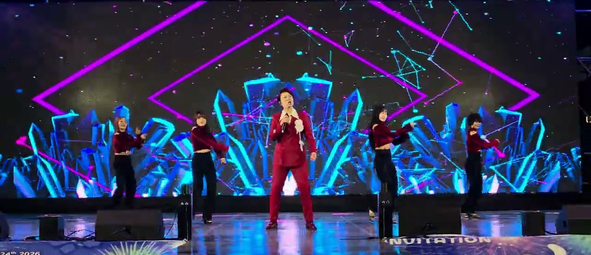
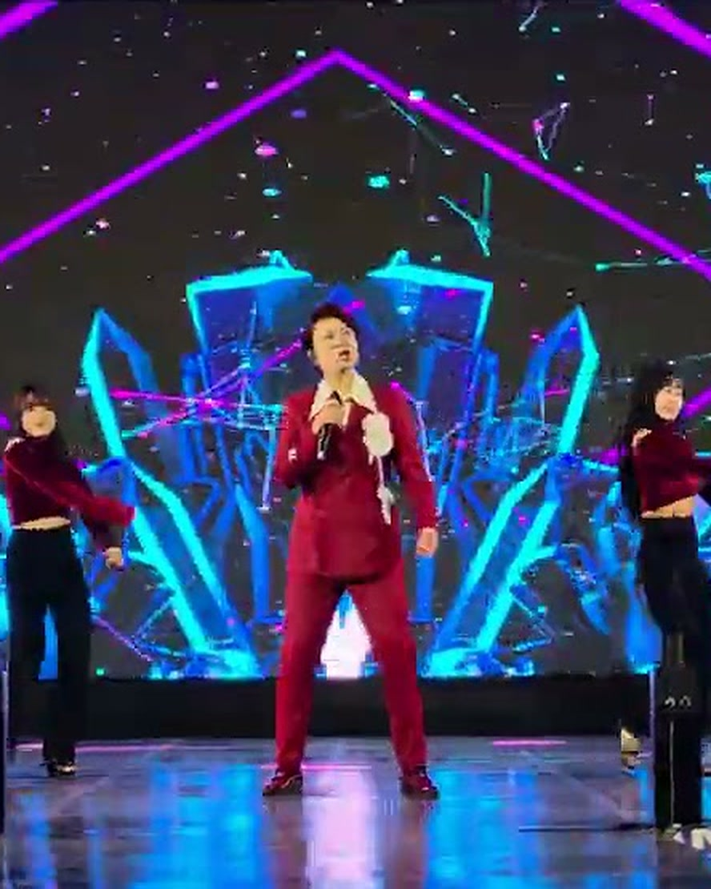

20대 초반부터 약 13년간 고기잡이배를 탔다. 직접 잡은 생선을 트럭과 어시장에 넘기며 생계를 꾸리는 동안에도 노래를 놓지 않았다.
가수의 꿈을 위해 모아둔 돈을 잃고, 2016년 림프암 진단까지 받으며 몸과 마음이 무너졌다.
노래에 대한 열망이 그를 다시 일으켰다. 긍정의 힘으로 병을 이겨내고, 마흔의 나이에 인생곡을 만났다.
32곡을 담은 첫 정규앨범 「사랑을 하는걸까」를 발표하며, 축제·방송·노래교실 무대를 쉼 없이 오르고 있다.

카리스마 넘치는 창법의
트로트 여왕
바다에서 보낸 13년, 그리고 무대 위의 지금.
전국의 축제와 방송에서 노래하는 성인가요 가수 지수양입니다.
여자 어부에서 트로트 가수로. 지수양의 무대에는 살아온 시간이 얹혀 있다.

“매일이 최고의 순간”이라는 마음으로 병마를 이겨냈다.
— 뉴데일리 인터뷰 중 (2021)20대 초반부터 약 13년간 고기잡이배를 탔다. 직접 잡은 생선을 트럭과 어시장에 넘기며 생계를 꾸리는 동안에도 노래를 놓지 않았다.
가수의 꿈을 위해 모아둔 돈을 잃고, 2016년 림프암 진단까지 받으며 몸과 마음이 무너졌다.
노래에 대한 열망이 그를 다시 일으켰다. 긍정의 힘으로 병을 이겨내고, 마흔의 나이에 인생곡을 만났다.
32곡을 담은 첫 정규앨범 「사랑을 하는걸까」를 발표하며, 축제·방송·노래교실 무대를 쉼 없이 오르고 있다.
2018년 데뷔곡부터 2025년 정규 1집까지. 카드를 눌러 유튜브에서 바로 들어보세요.
곡을 누르면 유튜브에서 해당 곡 무대를 찾아 드립니다.
방송, 축제, 노래교실까지 — 무대의 폭이 곧 경력입니다.
축제 · 기념식 · 노래교실 · 방송 — 전국 어디든 찾아갑니다.
전남 고흥을 중심으로 전국 활동 중 · 메들리 및 요청곡 무대 가능